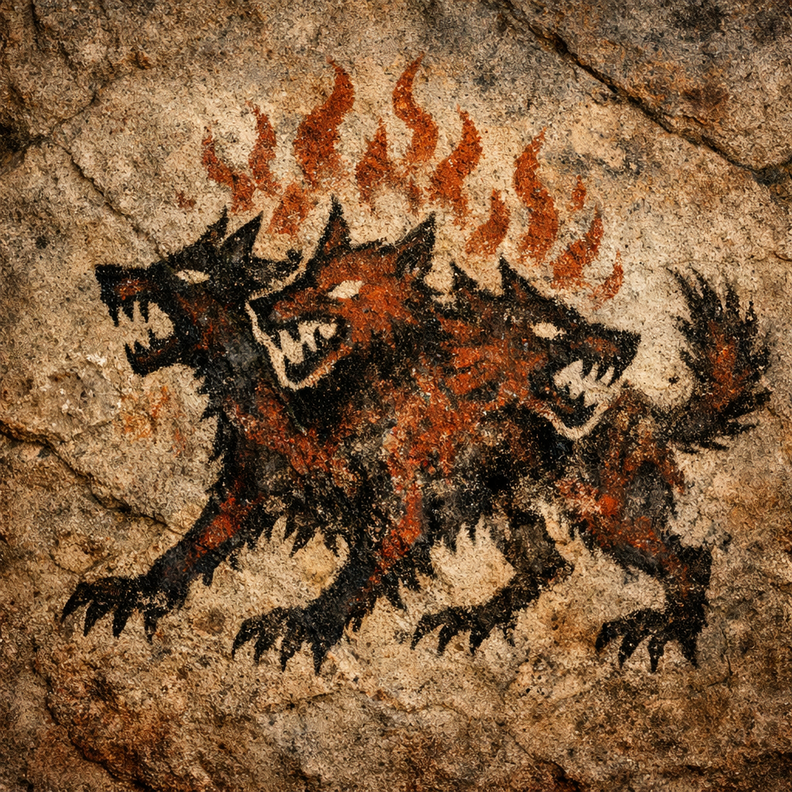

🪨🔥👁️ Big Cave Explanation for Cave Persons

We make Big Cave Scroll of IPT for all cave persons.
IDENTITY PANIC TOOLKIT
Listen, cave persons.
World not small now.
Before, cave person know:
own fire
own tribe
own hill
own mammoth problem
own weird cousin who paint too many bison on wall
Now?
World become giant screaming canyon.
Many tribe. Many symbol. Many chief. Many magic talking face on glowing stone. Many stranger yell:
“YOU MUST CARE!”
“YOU MUST PICK SIDE!”
“YOU MUST HATE OTHER CAVE PERSONS!”
“ONLY ME KEEP YOU SAFE!”
Cave person brain go AAAAAAAA.
That where IPT come in.
PART 1 • What Identity Panic Be
Identity panic happen when cave person not just scared of tiger.
Tiger fear say: “Tiger there. Run now.”
Identity panic different.
Identity panic say:
“Who am me?”
“Where tribe?”
“Which side good?”
“Do I belong?”
“Why world change fast?”
That deep fear.
That fear about:
place in world
tribe story
meaning
future
dignity
memory
When these shaky, cave person grab tribe harder. Grab anger harder. Grab certainty harder.
Then loud cave influencer appear:
“Me tell you who bad.”
“Me tell you who pure.”
“Me turn panic into purpose.”
And many cave persons clap stones together.
PART 2 • What IPT Actually Be
IPT not religion.
Not cult.
Not replacement tribe with shinier mammoth banners.
IPT is tool bag.
Tool bag for cave persons when world start shaking inside skull.
IPT say:
“Wait. Slow feet. Look around. See trap before trap rides you like stolen woolly rhino.”
PART 3 • What Bad Signal Sellers Do
Some cave persons learn scared tribe easier to lead.
So manipulator make everything emergency:
“FINAL BATTLE!”
“LAST CHANCE!”
“TRIBE ENDS TONIGHT!”
Emergency keep cave person from thinking.
Manipulator also assign roles:
hero
victim
traitor
monster
savior
Then cave persons stop seeing humans. Only symbols.
IPT point at whole machine and say:
“That not truth machine. That panic harness.”
PART 4 • Big Cave Wisdom
IPT try build fear literacy.
That mean cave person learn read fear like tracker read footprints in mud.
Not just:
“Me scared.”
But:
“What kind of scare?”
“Who benefits?”
“What role just got assigned?”
“Why body hot before facts arrive?”
IPT help cave person notice steps.
Because many manipulations work only when invisible.
Once visible, spell lose teeth.
PART 5 • Final Fire Message For Cave Persons
IPT not new war drum.
IPT is:
A pause in middle of noise.
A small space between signal and reaction.
A way to see machinery before machinery wraps around your bones.
🔥 When world screams: “CHOOSE NOW!”
IPT whispers: “Look first.”
👁️ When system casts you into role...
IPT says: “You can step off stage.”
🪨 Fight without becoming puppet.
Speak without spreading poison.
Protect without losing your own mind.
Very rare strength.
But possible.
#IdentityPanicToolkit
